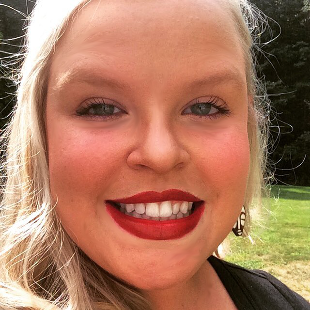

About Me
Welcome! My name is Katie DeAngelis. I attended the University of New Hampshire (Durham) and received a dual degree in Anthropology and Pre-Law. After graduation, I began work as an Implementation Specialist for Meditech. As an Implementation Specialist for the Emergency Department Management (EDM) suite of applications I traveled to hospitals throughout the United States and Canada to install, setup, and train front end users on our software’s functionality.
After several years at Meditech, I transitioned to a Laboratory Information Systems (LIS) Analyst position at a small rural hospital in New Hampshire. As an LIS Analyst I oversee the implementation of updates related to Meditech, as well as maintaining other operational hardware, and software components of our lab information system. In addition, I ensure that we meet all regulatory and accreditation requirements set forth by our governing agencies.
During my time as an analyst, I realized that there seemed to be a gap between functionality in the HIS that is being created and the functional need of its clinical users. As an analyst, I am able to marginally mitigate this gap by optimizing system usage and in-depth user training, however there are still areas within HIS development that need work.
With this in mind and with many HIS vendors making the move to web based platforms, I turned my sites on Full Stack Development to help master the languages and skills I would need to help make these systems more efficient, intuitive to users, and help to capture critical patient health information. I am currently working towards a Full Stack Development certificate through the University of New Hampshire. I anticipate completion of the certificate in March of 2018.
In my free time I enjoy reading and Netflix marathons. I have also started listening to a variety of podcasts from InfoQ, to One Bad Mother, to NPR Politics. I am a life long learner and I enjoy the ability to hone my current skill set and work on new challenges! Feel free to contact me above for additional information or connect with me through social media!
Connect with Me